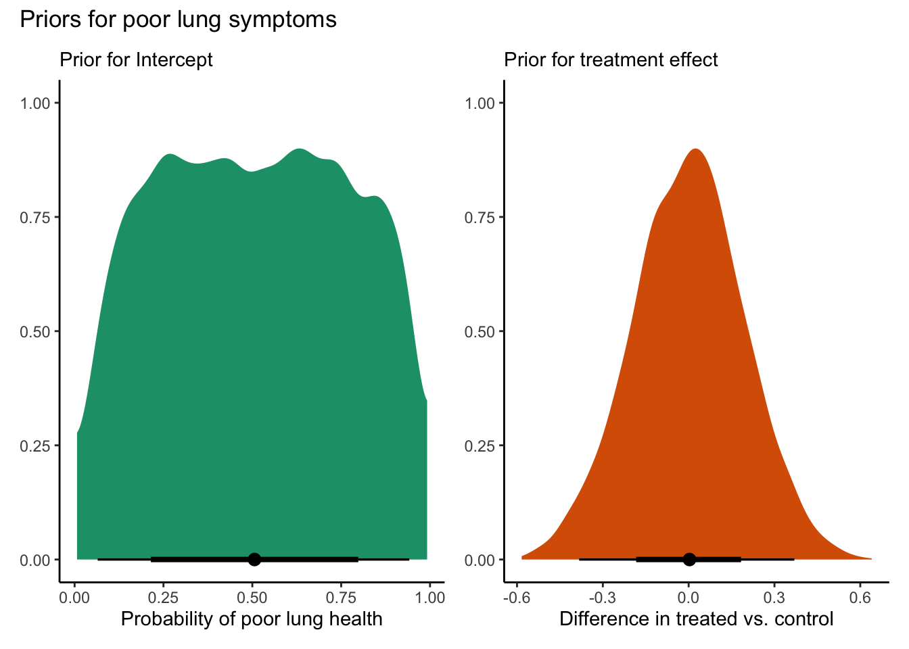

library(here)library(tidyverse)library(tidybayes)library(haven)library(modeldb)library(kableExtra)library(brms)library(cmdstanr)library(modelr)library(osfr)library(modelsummary)library(bayesplot)library(patchwork)library(marginaleffects)# Use the cmdstanr backend for Stan# You need to install the cmdstanr package first# (https://mc-stan.org/cmdstanr/) and then run cmdstanr::install_cmdstan() to# install cmdstan on your computer.options(mc.cores =4,brms.backend ="cmdstanr")
First bring in the BHET master data and restrict to just wave, treatment, and respiratory outcomes
Let’s look at some simple frequencies for the self-reported respiratory outcomes:
Code
vars <-c("freq_cough", "freq_phlegm","freq_wheezing", "freq_breath","freq_no_chest")map(vars, ~ d1 %>%select(starts_with("freq")) %>%group_by(across(all_of(.x))) %>%tally() )
[[1]]
# A tibble: 4 × 2
freq_cough n
<dbl+lbl> <int>
1 1 [Most days a week] 269
2 2 [Several days a week] 363
3 3 [Only with a chest infection] 1731
4 4 [Not at all] 742
[[2]]
# A tibble: 4 × 2
freq_phlegm n
<dbl+lbl> <int>
1 1 [Most days a week] 394
2 2 [Several days a week] 391
3 3 [Only with a chest infection] 1294
4 4 [Not at all] 1026
[[3]]
# A tibble: 5 × 2
freq_wheezing n
<dbl+lbl> <int>
1 1 [Most days a week] 105
2 2 [Several days a week] 93
3 3 [A few days a month] 97
4 4 [Only with a chest infection] 323
5 5 [Not at all] 2487
[[4]]
# A tibble: 3 × 2
freq_breath n
<dbl+lbl> <int>
1 1 [Most days a week] 242
2 2 [Several days a week] 717
3 3 [Not at all] 2146
[[5]]
# A tibble: 4 × 2
freq_no_chest n
<dbl+lbl> <int>
1 1 [No good days] 117
2 2 [A few good days] 231
3 3 [Most days are good] 394
4 4 [Every day is good] 2363
I created a simple outcome based on categorizing those reporting either Most days a week or Several days a week (and No good days or A few good days for frequency of days with chest trouble). Effectively, if you reported trouble on any of these, you are classified has having some self-reported respiratory problems. Here is the overall breakdown, with around 50% of our population reporting some respiratory problems.
Code
d1 %>%group_by(resp) %>%tally()
# A tibble: 2 × 2
resp n
<dbl> <int>
1 0 1496
2 1 1609
Okay, now some simple DiD models to look at the impact of the policy. I am using the extended TWFE set up (but in a Bayesian framework). The model ends up looking something like this:
Effectively, we are saturating the regression with interactions between treated cohorts and time, such that the \(\tau_{rt}\) are estimates of each group-time ATT.
I used informative, but weak priors for the intercept and the treatment effects, which are skeptical of large effect sizes. The plots below just show the prior distribution of the parameters for the treatment effects, and you can see that we are betting that it is extremely unlikely that the policy would change the prevalence of poor respiratory health by more than 50 percentage points (i.e., on the absolute probability scale, not percent).
Code
# limit sampled2 <- d1 %>%select(starts_with(c("year","cohort")), "ID_VILLAGE","resp","treat") %>%# limit to complete casesdrop_na() %>%# create unique continuous village Idgroup_by(ID_VILLAGE) %>%mutate(v_id =cur_group_id()) %>%ungroup()## load brms modelb2 <-readRDS(here("code/fits", "bhet-resp-b2.rds"))## extract prior drawspd <-prior_draws(b2) %>%# rescale to absolute probabilitiesmutate(pd0 =inv_logit_scaled(Intercept),pd1 =inv_logit_scaled(Intercept + b)) %>%# treatment effectmutate(diff = pd1 - pd0)## plot for interceptplot_pd1 <- pd %>%ggplot(aes(x = pd1)) +stat_halfeye(color="black", fill ='#1b9e77') +labs(x ="Probability of poor lung health", y =NULL, subtitle ="Prior for Intercept") +theme_classic()## plot for treatment effectplot_pdd <- pd %>%ggplot(aes(x = diff)) +stat_halfeye(color="black", fill ='#d95f02') +labs(x ="Difference in treated vs. control", y =NULL, subtitle ="Prior for treatment effect") +theme_classic()# Combined plot for priorspriors_lung <- (plot_pd1 | plot_pdd) +plot_annotation(title ="Priors for poor lung symptoms",theme =theme_classic())priors_lung

The basic model results are here:
Code
print(b2)
Family: bernoulli
Links: mu = logit
Formula: resp ~ 1 + (1 | v_id) + treat:cohort_year_2019:year_2019 + treat:cohort_year_2019:year_2021 + treat:cohort_year_2020:year_2021 + treat:cohort_year_2021:year_2021 + cohort_year_2019 + cohort_year_2020 + cohort_year_2021 + year_2019 + year_2021
Data: d2 (Number of observations: 3105)
Draws: 4 chains, each with iter = 2000; warmup = 1000; thin = 1;
total post-warmup draws = 4000
Group-Level Effects:
~v_id (Number of levels: 50)
Estimate Est.Error l-95% CI u-95% CI Rhat Bulk_ESS Tail_ESS
sd(Intercept) 0.27 0.06 0.16 0.39 1.00 1566 2801
Population-Level Effects:
Estimate Est.Error l-95% CI u-95% CI Rhat
Intercept 0.01 0.09 -0.17 0.18 1.00
cohort_year_2019 0.20 0.18 -0.15 0.55 1.00
cohort_year_2020 0.23 0.17 -0.12 0.58 1.00
cohort_year_2021 0.17 0.25 -0.33 0.67 1.00
year_2019 0.08 0.10 -0.12 0.27 1.00
year_2021 0.07 0.11 -0.14 0.28 1.00
cohort_year_2019:year_2019:treat -0.46 0.21 -0.88 -0.04 1.00
cohort_year_2019:year_2021:treat -0.37 0.22 -0.81 0.05 1.00
cohort_year_2020:year_2021:treat 0.01 0.22 -0.43 0.45 1.00
cohort_year_2021:year_2021:treat -0.27 0.32 -0.89 0.38 1.00
Bulk_ESS Tail_ESS
Intercept 4034 3424
cohort_year_2019 3935 3123
cohort_year_2020 4256 3232
cohort_year_2021 4502 3178
year_2019 6948 3079
year_2021 5509 3474
cohort_year_2019:year_2019:treat 5959 3543
cohort_year_2019:year_2021:treat 5051 3305
cohort_year_2020:year_2021:treat 7353 2804
cohort_year_2021:year_2021:treat 7699 3205
Draws were sampled using sample(hmc). For each parameter, Bulk_ESS
and Tail_ESS are effective sample size measures, and Rhat is the potential
scale reduction factor on split chains (at convergence, Rhat = 1).
The ATTs are the product terms, but on the log-odds scale and not very intuitive. Instead, let’s look at the marginal effects. I only did the simple averaging of ATTs and the cohort-specific averaging for now.
This suggests a 7.6 percentage point decrease in the probability of self-reported lung function as a result of the policy. The cohort-specific ATTs suggest mostly consistent impacts for early- and later-treated.